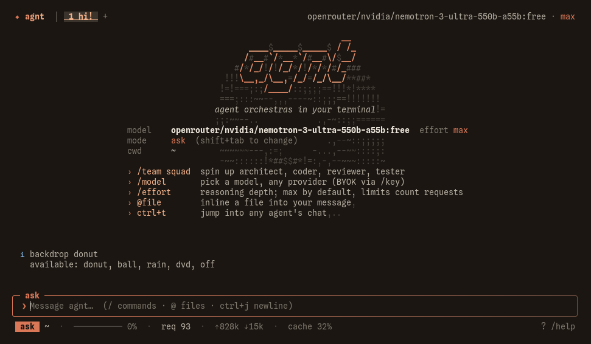

agnt: an AI coding agent for your terminal
scroll01overture
agent orchestras in your terminal.
agnt is a coding agent that lives in your terminal. It ships as one binary for Linux and Windows, runs on whichever model you point it at, and can split a task across a whole team of agents working at once.
curl -fsSL https://raw.githubusercontent.com/mozzarellabio/agnt/main/install.sh | shRun in any shell. Installs the agnt binary for Linux.

02request economy
Same result, fewer round-trips.
Every request to a model costs you time and money. agnt is built to make fewer of them: tool calls are batched, files are read in parallel, the stable part of the prompt is cached, and long context is compacted before it overflows.
Each block is one API round-trip. Illustrative, not a benchmark.
batched tools
Several tool calls travel in one request instead of one request each.
parallel reads
Files load side by side, not one turn at a time.
prompt caching
The part of the prompt that doesn’t change is cached, so repeats cost less.
context compaction
Long sessions are condensed before they overflow, keeping what still matters.
03ensemble
One command. Five players.
That seats a lead with an architect, a coder, a reviewer and a tester. They work at the same time, each on its own part, and the lead brings it back together.
You can talk to any of them mid-run: redirect the coder, question the reviewer, without stopping the rest.
04instruments
Any model. Your own keys.
Bring a key for the provider you already use, or keep everything on your machine with Ollama or LM Studio.
05the room
A terminal UI, made by hand.
Eleven skins, four working modes, undo and rewind, drawn for the terminal rather than ported to it. Switch the mode and skin below and watch what agnt does next.
› add rate limiting to the login route
read src/routes/login.ts · src/middleware/session.ts · src/config.ts
grep "rateLimit" in src/
Token bucket per client IP, checked before the session lookup.
+ src/middleware/ratelimit.ts
~ src/routes/login.ts
diagnostics tsc: no errors · verified: bun test
plan ready: 2 files. approve to start.
plan: reads and proposes; nothing changes until you approve.
undo & rewind
Every edit is snapshotted. /undo reverts the last one, /rewind goes back further.
worktrees
/worktree gives a task its own branch checkout so experiments stay off your tree.
MCP & plugins
Add MCP servers and plugins; their tools, skills and hooks join the agent’s own.
schedule & loop
/schedule and /loop run prompts on a timer, with no one at the keyboard.
And when nobody is at the keyboard, the same agent runs headless, inside a script or a CI step.
06closing the loop
It checks its own work.
After every edit agnt runs the project’s checker and sees the errors before it moves on. When it thinks it’s done, it runs your typecheck or tests, and if they fail it keeps going until they pass.
diagnostics on edit
TypeScript, Python, Go and JSON are checked as each file changes, and errors land in the same turn.
verify before finishing
The agent picks your typecheck, test or build script and runs it before it answers.
hooks
Shell commands on pre, post, prompt and stop. A failing stop hook sends the agent back to work.
context you control
/context shows what fills the window; /compact condenses it on demand.
07remote
Take it to your phone.
Type /rc and agnt shows a QR code. Scan it on the same Wi-Fi and your session opens in the browser: no app, no account, no domain. It follows your terminal’s skin.
- 1 /rc
- 2 scan the code
- 3 chat, approve edits, stop the agent
- · /rc tunnel works away from home
08questions
Frequently asked questions.
What is agnt?
agnt is an AI coding agent that runs in your terminal. It reads and edits your code, runs your checks, and can split a task across a team of agents working at the same time.
Which models does agnt work with?
Anthropic, OpenAI, OpenRouter, Gemini, DeepSeek, Groq, xAI and Mistral with your own API keys, plus Ollama and LM Studio for models that run on your machine. Any OpenAI-compatible endpoint can be added with /provider.
Can agnt run fully locally?
Yes. Point it at Ollama or LM Studio and nothing leaves your machine except what you choose to send.
Which platforms does agnt support?
Linux and Windows. It installs as a single binary with one command.
How does agnt use fewer requests?
It batches tool calls into one request, reads files in parallel, caches the stable part of the prompt, and compacts long context before it overflows.
Is it safe to let an agent edit my code?
Four modes control what it may do: ask, auto, plan (read-only until you approve) and free. Every edit is snapshotted, so /undo and /rewind restore earlier states, and /allow and /deny set permanent rules.
Can I use agnt in CI or scripts?
Yes. The same agent runs headless, inside a script or a CI step.
Can I control agnt from my phone?
Type /rc and scan the QR code on the same Wi-Fi. The session opens in your browser with no app or account. /rc tunnel works away from home.
09coda
Install agnt.
One binary. Add a key or point it at a local model, then type /team squad.
curl -fsSL https://raw.githubusercontent.com/mozzarellabio/agnt/main/install.sh | shRun in any shell. Installs the agnt binary for Linux.